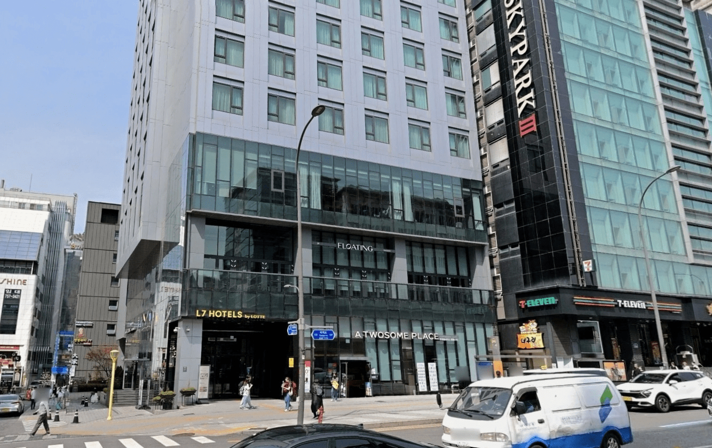

The short answer
- Most first-time visitors Myeongdong Station
- City Hall, Gwanghwamun and Jongno days Euljiro 1-ga / Sogong-dong
- Several subway lines across Seoul Euljiro 3-ga
- Shopping as part of the stay Central Myeongdong
Myeongdong Stay Guide
For most first-time visitors, the Myeongdong Station side is the easiest default. The main shopping streets are simple to understand, Line 4 is close and returning to the hotel during the day is practical.
Euljiro 1-ga and Sogong-dong can work better when City Hall, Gwanghwamun and Jongno shape more of the itinerary. The Euljiro 3-ga side is worth considering when several subway lines and repeated journeys across Seoul matter more than stepping directly into Myeongdong's busiest streets.
The right hotel therefore depends on more than price or star rating. The useful comparison is location, transport access, luggage practicality, airport connections and the routes you expect to repeat around Seoul.
Choose the location first
A Myeongdong Station hotel works differently from one near Euljiro 1-ga or Euljiro 3-ga. The difference becomes clear when you arrive with a suitcase, take the subway several times a day or return with shopping bags.
Easiest for a first trip
This is the simplest part of Myeongdong to understand. The main shopping streets begin close to the station, and the location works naturally when Line 4 or Seoul Station is part of the itinerary.
It is especially useful for travelers arriving with luggage, shopping heavily or returning to the hotel during the day. Keeping the station and hotel in the same daily routine reduces the amount of unnecessary walking.
The trade-off is that this is one of the busiest parts of Myeongdong. A hotel close to the station can still have an awkward suitcase route, so the useful elevator and final approach matter more than the nearest exit on a map.
Hotels in this guide: L7 MYEONGDONG by LOTTE HOTELS and Hotel Skypark Myeongdong Ⅲ.
When shopping is part of the stay
The pedestrian shopping core sits between Myeongdong Station and the Euljiro side of the district. Shopping, restaurants, beauty stores and evening street activity are immediately around you.
This position is useful when you expect to return to the hotel with shopping bags or take breaks during the day. Staying here feels most like staying inside Myeongdong rather than using it only as a transport base.
The compromise is that pedestrian convenience and vehicle convenience are not always the same. Busy streets can make the final approach feel different when you arrive by taxi or carry luggage.
Hotel in this guide: Le Méridien Seoul, Myeongdong.
Better for northern central Seoul
This side works differently from Myeongdong Station. Euljiro 1-ga is on Line 2, and the area is better placed for routes toward City Hall, Gwanghwamun and Jongno.
It can be a stronger base when shopping in Myeongdong is only one part of the trip. Travelers whose days spread north and east across central Seoul may find this side more useful than repeatedly returning to Line 4.
The trade-off is straightforward: if Myeongdong Station anchors the itinerary several times a day, staying here simply because the hotel is still described as Myeongdong may add unnecessary walking.
Hotel in this guide: THE GRAND LOTTE SEOUL (formerly Lotte Hotel Seoul).
More subway coverage, less Myeongdong intensity
The eastern edge of the area begins to feel more like Euljiro than central Myeongdong. Euljiro 3-ga gives access to Lines 2 and 3, which can help when several days involve repeated journeys across different parts of Seoul.
The surrounding streets also feel less dependent on the concentrated visitor-shopping atmosphere in central Myeongdong. That can be a benefit when you want practical city access without returning to the busiest pedestrian streets every evening.
The compromise is that you are no longer stepping directly into the main Myeongdong shopping core when you leave the hotel. Travelers who want that atmosphere outside the door may find this side too removed.
Hotel in this guide: NINE TREE BY PARNAS SEOUL MYEONGDONG II.
One-table comparison
| Hotel | Main reason to choose it | Transport advantage | Main trade-off |
|---|---|---|---|
| L7 MYEONGDONG by LOTTE HOTELS | First trip and Myeongdong Station | Myeongdong Station and Line 4 | The nearest route may not be the easiest with luggage |
| THE GRAND LOTTE SEOUL | Full-service stay and northern central Seoul | Euljiro 1-ga and Line 2 | Less useful when Myeongdong Station anchors the day |
| Le Méridien Seoul, Myeongdong | Central Myeongdong and hotel quality | Central access within the district | Higher cost and a busy central setting |
| NINE TREE BY PARNAS SEOUL MYEONGDONG II | Multi-day travel across Seoul | Euljiro 3-ga and Lines 2 and 3 | Farther from the pedestrian shopping core |
| Hotel Skypark Myeongdong Ⅲ | Straightforward station convenience | Myeongdong Station focus | Hotel experience is secondary to location |
This is a location and travel-fit comparison, not a fixed ranking by price, category or star rating.
This page contains affiliate links.
Hotel rates vary significantly by date, room type, occupancy and cancellation policy. Compare the final price and conditions before booking.
Hotel-level decision
These five hotels cover the four location patterns above. Read the location, route and trade-off first; the booking links come only after the practical fit is clear.

Why it works. L7 MYEONGDONG by LOTTE HOTELS is the clearest starting point when Myeongdong Station itself is part of the reason for staying here. The subway, shopping streets and hotel fit into the same daily routine.
Location and daily routes. It works especially well on a first trip, when Line 4 or Seoul Station matters and when shopping bags are likely to return to the hotel during the day.
The luggage reality. Exit 9 is the shortest route to L7 MYEONGDONG by LOTTE HOTELS, but it involves stairs. Exit 7 is about 133 metres from the hotel and has an escalator, so it can be the easier option with a large suitcase even though the walk is slightly longer. From Exit 7, the final approach follows a broad, mostly level sidewalk.
Light luggage: Exit 9. Large suitcase: Exit 7.
Who should choose it. Start here if this is your first Seoul trip and an easy-to-remember Myeongdong Station base matters. Look elsewhere when most days are concentrated around areas better served from another subway line.
Why it works. THE GRAND LOTTE SEOUL sits on the Euljiro 1-ga and Sogong-dong side of the district. It is a full-service choice for travelers whose central Seoul plans extend beyond the Myeongdong shopping streets.
Location and daily routes. The position works well when City Hall, Gwanghwamun, Jongno and the northern side of central Seoul appear repeatedly in the itinerary. Line 2 can be more useful than returning to Myeongdong Station each day.
The trade-off. This location is less useful when Line 4 anchors the trip or when you want the pedestrian shopping core directly outside the hotel. Airport services and stops can change, so check the current official route for your travel date.
Who should choose it. Choose it when a full-service stay and northern central Seoul routes matter together. A station-oriented Myeongdong hotel may be more practical when hotel facilities are secondary.
Why it works. Le Méridien Seoul, Myeongdong suits travelers who want to stay inside central Myeongdong without treating the hotel as merely a place to sleep. The hotel itself carries more weight in the trip than it does with the station-led choices.
Location and daily routes. Shopping, restaurants and central Seoul plans stay close, making the hotel a strong match for couples or travelers who expect to return during the day.
The trade-off. A central pedestrian setting can be busy, and the reason to pay more is the combination of location and hotel quality rather than the shortest possible route from a subway entrance.
Who should choose it. Choose Le Méridien Seoul, Myeongdong when central Myeongdong and the hotel experience both matter. A simpler station-oriented property is better when location alone drives the decision.
Why it works. NINE TREE BY PARNAS SEOUL MYEONGDONG II is the outlier in this shortlist because it sits toward Euljiro 3-ga rather than directly beside Myeongdong Station.
Location and daily routes. Lines 2 and 3 can be more useful than Line 4 for a traveler spending several days moving across Seoul. The area also steps away from the most concentrated tourist-shopping streets.
The trade-off. You do not walk directly into the main Myeongdong shopping core when leaving the hotel, and the final route still matters with luggage. Check this exact property rather than another Nine Tree location with a similar name.
Who should choose it. Choose Nine Tree II when the trip is about moving across Seoul rather than repeatedly returning to Myeongdong Station. Stay closer to the center when the Myeongdong atmosphere outside the door matters more.
Why it works. Hotel Skypark Myeongdong Ⅲ has the clearest location-first role in this shortlist. It is for travelers who care more about keeping Myeongdong Station simple than making the hotel itself part of the trip.
Location and daily routes. The station-focused position can work well on a short first visit when Line 4 and the central shopping streets shape most days.
The trade-off. Station proximity does not answer every luggage question. The useful elevator, street route and current airport connection still need to be checked before arrival, while travelers seeking a quieter or more full-service stay may prefer another hotel.
Who should choose it. Choose Skypark 3 when location simplicity beats hotel facilities. It is less compelling when the hotel experience or routes farther north matter more.
Airport limousine routes and stop locations can change. Check current official information before travel.
Arrival and departure
For travelers with one small suitcase, almost any of these locations can work. With two large suitcases, the answer changes.
Airport buses can be easier than AREX plus a subway transfer because they reduce luggage handling, but only when the final stop is genuinely convenient for the hotel. A route that looks direct can still end with a difficult street crossing or a longer walk than expected.
Airport access is therefore not a simple yes-or-no hotel feature. Check where the service actually stops, how far you still need to walk, whether the subway route has a usable elevator and what stands between the stop and the hotel entrance.
That final street segment can matter more than the total airport-to-Seoul travel time. Bus routes and schedules change, so confirm the current official information before travel.
Area fit
Myeongdong remains one of the easiest bases for a first Seoul trip because sightseeing, shopping, food and transport can be combined without learning a different neighborhood for every basic task. It works especially well for shorter trips when central sightseeing is a priority.
It is not automatically the best choice for everyone. A trip focused on Seongsu, Jamsil or Gangnam can involve repeated cross-city travel, Hongdae may fit better when nightlife and late cafés shape several evenings, and another central neighborhood can feel calmer and more residential.
The advantage of Myeongdong is not that everything in Seoul is next door. It is that a first-time visitor can manage many different kinds of days from one relatively easy base.
Final recommendation
For most first-time visitors without a special requirement, L7 MYEONGDONG by LOTTE HOTELS is the easiest place to start comparing.
THE GRAND LOTTE SEOUL is the stronger full-service choice when City Hall, Gwanghwamun and Jongno shape more of the trip. Le Méridien Seoul, Myeongdong makes more sense when the hotel itself matters and you want to stay inside central Myeongdong.
NINE TREE BY PARNAS SEOUL MYEONGDONG II has the stronger transport argument for a longer trip using several subway lines. Hotel Skypark Myeongdong Ⅲ belongs on the shortlist when making Myeongdong Station simple matters more than hotel facilities.
Do not choose between these hotels by star rating alone. Choose the one that removes the most friction from the journeys you expect to repeat.
Booking step
Hotel prices in Seoul can change significantly by date, room type, occupancy and cancellation policy.
Once the hotel location fits your trip, compare the same room type and cancellation conditions across the booking sites linked in that hotel's section above.
FAQ
Yes. It is one of the easiest areas for combining central sightseeing, shopping, restaurants and public transport. Its main disadvantages are crowds, a tourist-oriented atmosphere and often compact hotel rooms.
Myeongdong Station is the easier default for a simple first trip and Line 4 access. Euljiro can be better when Line 2 or journeys toward City Hall, Jongno and other parts of Seoul shape more of the itinerary.
Hotel Skypark Myeongdong Ⅲ and L7 MYEONGDONG by LOTTE HOTELS are the two strongest choices when easy use of Myeongdong Station matters. The better option still depends on the entrance, elevator route and subway line you expect to use most.
There is no single answer based only on distance. Elevator access, airport-bus stop location, road crossings and the final route to the hotel entrance all matter. Check the actual arrival route before booking.
It is touristy. For many first-time visitors, that is partly why it works: restaurants, shopping, exchange services and transportation are easy to find. Travelers looking for a more residential or local neighborhood may prefer another area.
Research checked: August 2026. Korea Inside distinguishes official transport information from traveler reports and does not present unverified walking times or hotel experiences as firsthand experience.